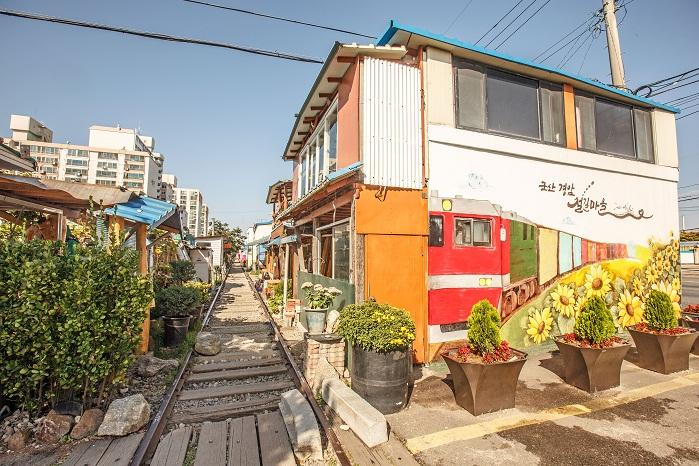

ESFP 추천 여행지
전라북도 군산

추천 이유
ESFP는 새로운 장소를 탐험하고 사람들과 즐거운 추억을 만드는 것을 좋아합니다. 군산은 근대문화유산과 감성적인 거리, 다양한 먹거리가 어우러진 도시로 걷기만 해도 새로운 발견을 할 수 있는 매력적인 여행지입니다.
추천 여행 코스
- 군산 근대역사박물관
- 초원사진관
- 신흥동 일본식 가옥
- 경암동 철길마을
- 이성당 빵집 방문
추천 포인트
- 레트로 감성을 느낄 수 있는 도시
- 사진 찍기 좋은 명소가 많음
- 다양한 먹거리와 카페 탐방 가능
- 친구들과 함께 추억 만들기 좋은 여행지